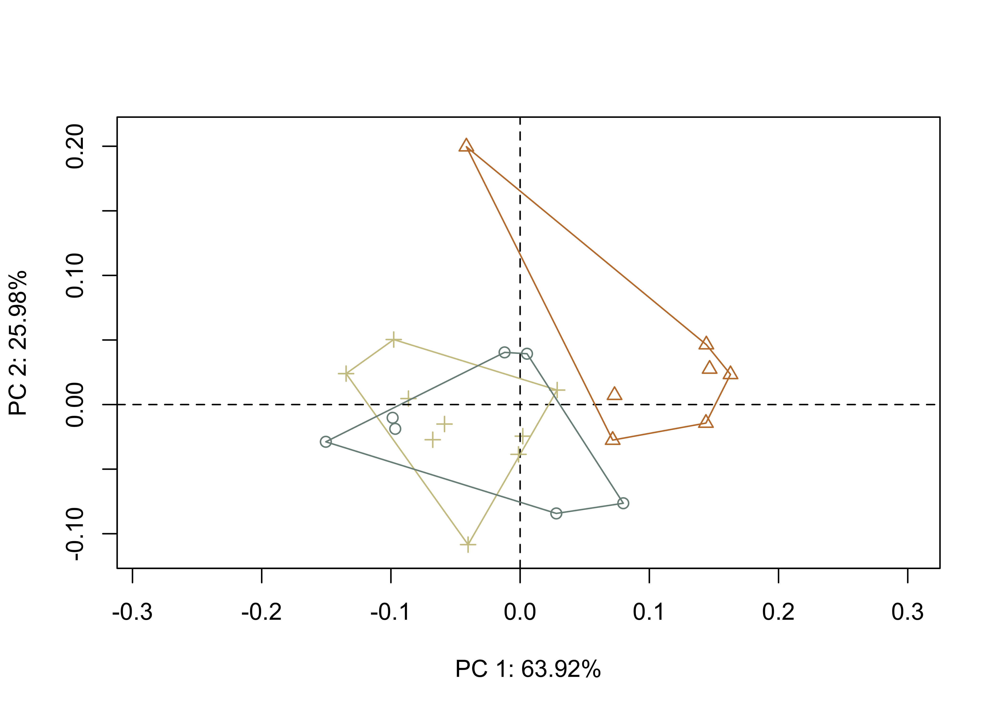

# load required analysis packages
library(here)
library(StereoMorph)
library(geomorph)
library(tidyverse)
library(wesanderson)
library(ggplot2)
## load shape data
source('readmulti.csv.R')
# read .csv files
setwd('./data2')
filelist <- list.files(pattern = '.csv')
coords <- readmulti.csv(filelist)
setwd('../')
# read qualitative data
qdata <- read.csv('qdata.csv',
header = TRUE,
row.names = 1)
qdata <- qdata %>%
filter(production %in% c('A', 'B', 'C'))
qdata <- qdata[match(dimnames(coords)[[3]], rownames(qdata)),]Morphology by Core Production Area
Generalized Procrustes Analysis
Landmark data were aligned to a global coordinate system (Kendall 1981, 1984; Slice 2001), achieved through generalized Procrustes superimposition (Rohlf and Slice 1990) performed in R (R Core Development Team, 2023) using the geomorph library (Adams et al. 2017; Adams and Otarola-Castillo 2013; Baken et al. 2021). Procrustes superimposition translates, scales, and rotates the coordinate data to allow for comparisons among objects (Gower 1975; Rohlf and Slice 1990). The geomorph package uses a partial Procrustes superimposition that projects the aligned specimens into tangent space subsequent to alignment in preparation for the use of multivariate methods that assume linear space (Rohlf 1999; Slice 2001).
# gpa
Y.gpa <- gpagen(coords, print.progress = FALSE)
# plot
#plot(Y.gpa)
# geomorph data frame
gdf <- geomorph.data.frame(shape = Y.gpa$coords,
size = Y.gpa$Csize,
production = qdata$production)Principal Components Analysis
Principal components analysis (Jolliffe 2002) was used to visualize shape variation among the Perdiz arrow points. The shape changes described by each principal axis are commonly visualized using thin-plate spline warping of a reference 3D mesh (Klingenberg 2013; Sherratt et al. 2014).
# principal components analysis
pca<-gm.prcomp(Y.gpa$coords)
summary(pca)
Ordination type: Principal Component Analysis
Centering by OLS mean
Orthogonal projection of OLS residuals
Number of observations: 23
Number of vectors 22
Importance of Components:
Comp1 Comp2 Comp3 Comp4
Eigenvalues 0.008923598 0.003627567 0.000568412 0.0003536702
Proportion of Variance 0.639213107 0.259849018 0.040716357 0.0253340246
Cumulative Proportion 0.639213107 0.899062125 0.939778482 0.9651125062
Comp5 Comp6 Comp7 Comp8
Eigenvalues 0.0001708183 0.0001084606 6.956618e-05 5.203681e-05
Proportion of Variance 0.0122360148 0.0077692249 4.983149e-03 3.727489e-03
Cumulative Proportion 0.9773485210 0.9851177458 9.901009e-01 9.938284e-01
Comp9 Comp10 Comp11 Comp12
Eigenvalues 2.560315e-05 2.132217e-05 1.103704e-05 7.925250e-06
Proportion of Variance 1.833999e-03 1.527345e-03 7.906030e-04 5.676997e-04
Cumulative Proportion 9.956624e-01 9.971897e-01 9.979803e-01 9.985480e-01
Comp13 Comp14 Comp15 Comp16
Eigenvalues 5.320940e-06 4.897552e-06 2.726923e-06 2.198822e-06
Proportion of Variance 3.811483e-04 3.508203e-04 1.953343e-04 1.575055e-04
Cumulative Proportion 9.989292e-01 9.992800e-01 9.994753e-01 9.996328e-01
Comp17 Comp18 Comp19 Comp20
Eigenvalues 1.591217e-06 1.120021e-06 9.470936e-07 6.941200e-07
Proportion of Variance 1.139817e-04 8.022907e-05 6.784200e-05 4.972105e-05
Cumulative Proportion 9.997468e-01 9.998270e-01 9.998949e-01 9.999446e-01
Comp21 Comp22
Eigenvalues 4.858723e-07 2.873605e-07
Proportion of Variance 3.480389e-05 2.058414e-05
Cumulative Proportion 9.999794e-01 1.000000e+00# set plot parameters
pch.gps <- c(1:3)[as.factor(qdata$production)]
col.gps <- wes_palette('Moonrise2')[as.factor(qdata$production)]
col.hull <- c('#CCC591','#C27D38','#798E87')
# plot pca by merged
pc.plot <- plot(pca,
asp = 1,
pch = pch.gps,
col = col.gps)
shapeHulls(pc.plot,
groups = qdata$production,
group.cols = col.hull)
# plot x/y maxima/minima
## x - minima
mean.shape <- mshape(Y.gpa$coords)
plotRefToTarget(pca$shapes$shapes.comp1$min,
mean.shape)## x - maxima
plotRefToTarget(pca$shapes$shapes.comp1$max,
mean.shape)## y - minima
plotRefToTarget(pca$shapes$shapes.comp2$min,
mean.shape)## y - maxima
plotRefToTarget(pca$shapes$shapes.comp2$max,
mean.shape)knitr::include_graphics('img/fig6.jpg')Procrustes ANOVA
To assess whether shape and size differ by size class, Procrustes ANOVAs (Goodall 1991) were run that enlist effect-sizes (zscores) computed as standard deviates of the generated sampling distributions (Collyer, Sekora, and Adams 2015). A residual randomization permutation procedure (RRPP; n = 10,000 permutations) was used for all Procrustes ANOVAs (Adams and Collyer 2015; Collyer and Adams 2018), which has higher statistical power and a greater ability to identify patterns in the data should they be present (Anderson and Ter Braak 2003).
# shape
fit.sh <- procD.lm(shape ~ production,
data = gdf,
print.progress = FALSE,
iter = 9999)
# shape as a function of core production area?
anova(fit.sh)
Analysis of Variance, using Residual Randomization
Permutation procedure: Randomization of null model residuals
Number of permutations: 10000
Estimation method: Ordinary Least Squares
Sums of Squares and Cross-products: Type I
Effect sizes (Z) based on F distributions
Df SS MS Rsq F Z Pr(>F)
production 2 0.11866 0.059331 0.38636 6.2963 3.1461 6e-04 ***
Residuals 20 0.18846 0.009423 0.61364
Total 22 0.30713
---
Signif. codes: 0 '***' 0.001 '**' 0.01 '*' 0.05 '.' 0.1 ' ' 1
Call: procD.lm(f1 = shape ~ production, iter = 9999, data = gdf, print.progress = FALSE)# pairwise comparison of LS means = which differ?
pairwise.sh <- pairwise(fit.sh,
groups = qdata$production)
summary(pairwise.sh,
confidence = 0.95,
test.type = "dist")
Pairwise comparisons
Groups: A B C
RRPP: 10000 permutations
LS means:
Vectors hidden (use show.vectors = TRUE to view)
Pairwise distances between means, plus statistics
d UCL (95%) Z Pr > d
A:B 0.14818756 0.1042485 2.568896 0.0031
A:C 0.02357619 0.0992956 -1.551845 0.9374
B:C 0.16026709 0.0988744 2.964248 0.0003# size
fit.sz <- procD.lm(size ~ production,
data = gdf,
print.progress = FALSE,
iter = 9999)
# size as a function of firing practice?
anova(fit.sz)
Analysis of Variance, using Residual Randomization
Permutation procedure: Randomization of null model residuals
Number of permutations: 10000
Estimation method: Ordinary Least Squares
Sums of Squares and Cross-products: Type I
Effect sizes (Z) based on F distributions
Df SS MS Rsq F Z Pr(>F)
production 2 93938 46969 0.18383 2.2524 1.1173 0.1307
Residuals 20 417068 20853 0.81617
Total 22 511006
Call: procD.lm(f1 = size ~ production, iter = 9999, data = gdf, print.progress = FALSE)Mean shapes
# subset landmark coordinates to produce mean shapes for contexts
new.coords <- coords.subset(A = Y.gpa$coords,
group = qdata$production)
names(new.coords)[1] "A" "B" "C"## plot shape means
mean <- lapply(new.coords, mshape)
plot(mean$A)
plot(mean$B)
plot(mean$C)
# comparison plots
plotRefToTarget(mean$A,
mean$B,
method = "points",
mag = 1)
plotRefToTarget(mean$A,
mean$C,
method = "points",
mag = 1)
plotRefToTarget(mean$B,
mean$C,
method = "points",
mag = 1)
knitr::include_graphics('img/fig7.jpg')
References
Adams, Dean C., and Michael L. Collyer. 2015. “Permutation Tests for Phylogenetic Comparative Analyses of High-Dimensional Shape Data: What you Shuffle Matters.” Evolution 69 (3): 823–29. https://doi.org/10.1111/evo.12596.
Adams, Dean C., Michael L. Collyer, Antigoni Kaliontzopoulou, and Emma Sherratt. 2017. “Package geomorph: Geometric Morphometric Analyses of Landmark Data. R package version 3.0.5.” http://geomorphr.github.io/geomorph/.
Adams, Dean C., and Erik Otarola-Castillo. 2013. “geomorph: An R Package for the Collection and Analysis of Geometric Morphometric Shape Data.” Methods in Ecology and Evolution 4 (4): 393–99. https://doi.org/10.1111/2041-210x.12035.
Anderson, M. J., and C. J. F. Ter Braak. 2003. “Permutation Tests for Multi-Factoral Analysis of Variance.” Journal of Statistical Computation and Simulation 73 (2): 85–113. https://doi.org/10.1080=0094965021000015558.
Baken, Erica K., Michael L. Collyer, Antigoni Kaliontzopoulou, and Dean C. Adams. 2021. “geomorph v4.0 and gmShiny: Enhanced analytics and a new graphical interface for a comprehensive morphometric experience.” Journal Article. Methods in Ecology and Evolution. https://doi.org/10.1111/2041-210x.13723.
Collyer, Michael L., and Dean C. Adams. 2018. “RRPP: An R Package for Fitting Linear Models to High-Dimensional Data using Residual Randomization.” Methods in Ecology and Evolution 9 (7): 1772–79. https://doi.org/https://doi.org/10.1111/2041-210X.13029.
Collyer, Michael L., David J. Sekora, and Dean C. Adams. 2015. “A Method for Analysis of Phenotypic Change for Phenotypes Described by High-Dimensional Data.” Heredity 115 (4): 357–65. https://doi.org/10.1038/hdy.2014.75.
Goodall, Colin. 1991. “Procrustes Methods in the Statistical Analysis of Shape.” Journal of the Royal Statistical Society. Series B (Methodological) 53 (2): 285–339.
Gower, J. C. 1975. “Generalized Procrustes Analysis.” Psychometrika 40 (1): 33–51. https://doi.org/https://doi.org/10.1007/BF02291478.
Jolliffe, Ian T. 2002. Principal Component Analysis. New York: Springer.
Kendall, David G. 1981. “The Statistics of Shape.” In Interpreting Multivariate Data, edited by V. Barnett, 75–80. New York: Wiley.
———. 1984. “Shape Manifolds, Procrustean Metrics, and Complex Projective Spaces.” Bulletin of the London Mathematical Society 16 (2): 81–121. https://doi.org/10.1112/blms/16.2.81.
Klingenberg, Christian Peter. 2013. “Visualizations in Geometric Morphometrics: How to Read and How to Make Graphs Showing Shape Changes.” Hystrix 24 (1): 15–24. https://doi.org/http://dx.doi.org/10.4404/hystrix-24.1-7691.
R Core Development Team,. 2023. R: A Language and Environment for Statistical Computing. Vienna, Austria: R Foundation for Statistical Computing. http://www.R-project.org/.
Rohlf, F. James. 1999. “Shape Statistics: Procrustes Superimpositions and Tangent Spaces.” Journal of Classification 16 (2): 197–223. https://doi.org/10.1007/s003579900054.
Rohlf, F. James, and Dennis Slice. 1990. “Extensions of the Procrustes Method for the Optimal Superimposition of Landmarks.” Systematic Zoology 39 (1): 40–59. https://doi.org/10.2307/2992207.
Sherratt, Emma, David J. Gower, Christian Peter Klingenberg, and Mark Wilkinson. 2014. “Evolution of Cranial Shape in Caecilians (Amphibia: Gymnophiona).” Evolutionary Biology 41 (4): 528–45. https://doi.org/https://doi.org/10.1007/s11692-014-9287-2.
Slice, Dennis E. 2001. “Landmark Coordinates Aligned by Procrustes Analysis Do Not Lie in Kendall’s Shape Space.” Systematic Biology 50 (1): 141–49. https://doi.org/10.1080/10635150119110.